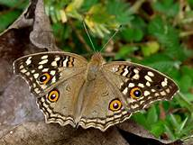

Lemon Pansy
J.lemonias

Kingdom:Animalia
Phylum:Arthropoda
Class:Insecta
Order:Lepidoptera
Family:Nymphalidae
Genus:Junonia
Species:J.lemonias/
Junonia lemonias, the lemon pansy,is a common nymphalid butterfly found in Cambodia and South Asia. It is found in gardens, fallow land, and open wooded areas.
It is brown with numerous eyespots as well as black and lemon-yellow spots and lines on the upperside of the wings. The underside is a dull brown, with a number of wavy lines and spots in varying shades of brown and black. There is also an eyespot on the lower side of the forewing. The wet- and dry-season forms differ considerably in coloration and even shape. In the wet-season form the markings are distinct and vivid and the wing shape is a little more rounded. In the dry-season form the markings are obscure and pale especially on the underside and the wing margin is more angular and jagged. This helps it camouflage in the dried leaf litter.
The lemon pansy is a very active butterfly and can be seen basking with its wings open facing the sun. It sits very low to the ground and can be approached easily. It feeds with its wings half open. It is a fairly strong flier and flies close to the ground with rapid wingbeats and often returns to settle back in the same spots.
Eggs are laid singly on the underside of leaves. The egg is green and barrel shaped with longitudinal ridges.